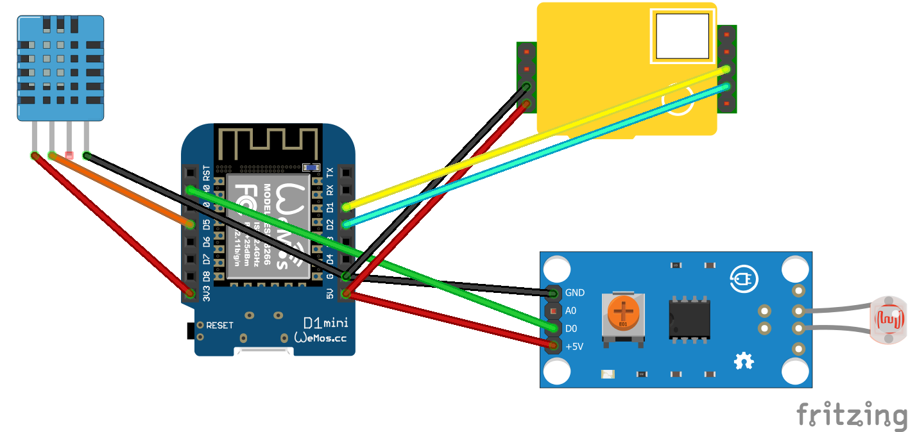
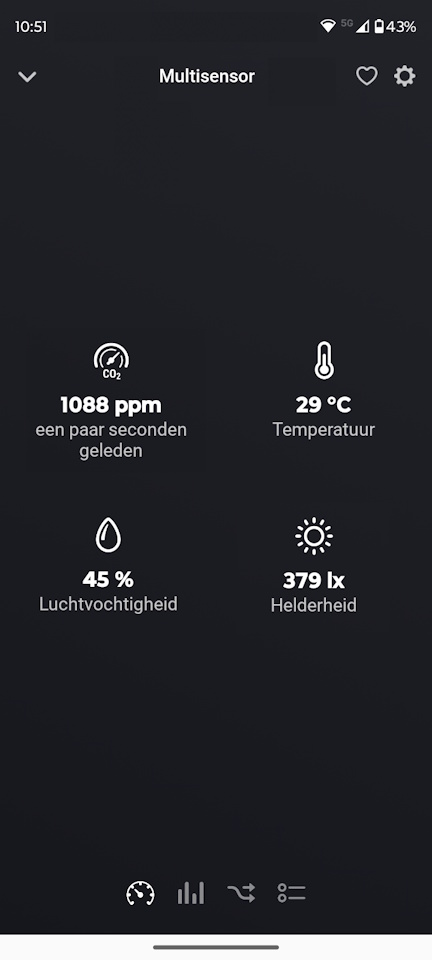

Een smart home wordt pas echt interessant wanneer het niet alleen schakelt, maar ook meet. Met deze DIY multi-sensor haal je in één keer vier nuttige metingen in huis.
In dit project combineer je een MH-Z19 CO₂-sensor, een DHT11 en een LDR met een Wemos D1 Mini. Het mooie aan deze vernieuwde opzet is dat de code een stuk netter is opgebouwd: iedere sensor heeft zijn eigen taak, de wifi-verbinding wordt bewaakt en Homey krijgt alleen updates wanneer dat zinvol is.
Wat ga je bouwen?
Je bouwt een compacte Homeyduino multi-sensor die CO₂, temperatuur, luchtvochtigheid en licht meet en deze waarden als capabilities naar Homey stuurt. Daarmee vervang je niet alleen meerdere losse sensoren, maar maak je ook meteen een veel interessantere databron voor je flows.
- Meerdere sensoren op één Wemos
- Klaar voor automatisering
Het eindresultaat is een DIY-project waar je in de praktijk echt iets aan hebt. Dankzij de modulaire code, wifi-herstel en slimme manier van publiceren voelt dit niet als een proefopstelling, maar als een sensor die je gewoon dagelijks kunt gebruiken.
Waarom is dit nuttig?
Juist CO₂ is zo’n waarde die je niet ziet, maar wel degelijk merkt. Een ruimte kan prima aanvoelen terwijl de luchtkwaliteit ongemerkt achteruitgaat. Zeker in een slaapkamer, werkkamer of woonkamer is het daarom verrassend handig om dit inzichtelijk te maken.
Door daar ook temperatuur, luchtvochtigheid en licht aan toe te voegen, krijg je een veel completer beeld van wat er in een ruimte gebeurt. En precies dat maakt een multi-sensor vaak waardevoller dan vier losse metingen zonder samenhang.
Ook technisch is deze opzet een stap vooruit. De sketch is opgesplitst in duidelijke modules voor wifi, CO₂, klimaat en luminance. Dat leest prettiger, werkt stabieler en maakt uitbreiden later ook een stuk eenvoudiger.
Benodigdheden
- Wemos D1 Mini of vergelijkbaar ESP8266-board
- MH-Z19 CO₂-sensor
- DHT11 sensor
- LDR voor de analoge ingang
- Homey met de Homeyduino-app geïnstalleerd
- USB-kabel, jumper wires en eventueel een breadboard
- Computer met Arduino IDE en de benodigde libraries
Handige links bij dit project
Dit zijn producten die aansluiten op de benodigdheden in dit artikel.
Waarom zelf bouwen?
Zelf bouwen is juist hier zo leuk omdat je voor relatief weinig geld een sensor maakt die meerdere waarden combineert én netjes samenwerkt met Homey. Je zit dus niet vast aan één fabrikant of een gesloten ecosysteem.
Bovendien houd je volledige controle. Je bepaalt zelf de apparaatnaam, de drempelwaarden, de manier van publiceren en eventuele uitbreidingen. Precies dat maakt Homeyduino-projecten zo verslavend leuk.
Stap-voor-stap uitleg
1. Sluit de sensoren aan
De vernieuwde code gebruikt andere pinnen dan de oudere versie, dus controleer de aansluitingen goed. Vooral de MH-Z19 wordt nu via seriële communicatie uitgelezen in plaats van via PWM. De pinverdeling ziet er als volgt uit:
- MH-Z19 RX D2
- MH-Z19 TX D1
- DHT11 data D5
- LDR A0
Zorg daarnaast uiteraard voor de juiste voeding en een gedeelde GND. Dat klinkt logisch, maar juist daar gaat het bij zelfbouwprojecten nog weleens mis.

2. Bereid de software voor
Installeer Arduino IDE en controleer of de ESP8266-board support goed staat ingesteld. Voeg vervolgens de libraries toe die in deze sketch worden gebruikt: ESP8266WiFi, SoftwareSerial, MHZ19, Homey en SimpleDHT. Vul daarna bovenin de code je eigen wifi-gegevens in.
3. Upload de code
Pas eventueel meteen ook de apparaatnaam aan. In de voorbeeldcode staat die nu op Multisensor. Upload de sketch vervolgens naar je Wemos D1 Mini, waarna vier Homey-capabilities worden aangemaakt: CO₂, temperatuur, luchtvochtigheid en luminance.
#include <ESP8266WiFi.h>
#include <SoftwareSerial.h>
#include <MHZ19.h>
#include <Homey.h>
#include <SimpleDHT.h>
// =========================
// Debug instellingen
// =========================
#define DEBUG 0 // 1 = debug aan, 0 = debug uit
#if DEBUG
#define DBG_PRINT(x) Serial.print(x)
#define DBG_PRINTLN(x) Serial.println(x)
#else
#define DBG_PRINT(x)
#define DBG_PRINTLN(x)
#endif
// =========================
// Configuratie
// =========================
namespace Config {
constexpr const char* WIFI_SSID = "SSID";
constexpr const char* WIFI_PASSWORD = "PASSWORD";
// Pins
constexpr uint8_t MH_Z19_RX_PIN = D2;
constexpr uint8_t MH_Z19_TX_PIN = D1;
constexpr uint8_t DHT_PIN = D5;
constexpr uint8_t LDR_ANALOG_PIN = A0;
// WiFi
constexpr unsigned long WIFI_CHECK_INTERVAL_MS = 60000;
constexpr unsigned long WIFI_CONNECT_TIMEOUT_MS = 30000;
// CO2
constexpr unsigned long CO2_SAMPLE_INTERVAL_MS = 5000;
constexpr unsigned long CO2_HEARTBEAT_INTERVAL_MS = 60000;
constexpr int CO2_PUBLISH_THRESHOLD_PPM = 30;
// DHT11
constexpr unsigned long DHT_SAMPLE_INTERVAL_MS = 30000;
constexpr unsigned long DHT_HEARTBEAT_INTERVAL_MS = 300000;
// Analoge LDR
constexpr unsigned long LDR_SAMPLE_INTERVAL_MS = 1000;
constexpr unsigned long LDR_HEARTBEAT_INTERVAL_MS = 60000;
constexpr int LDR_PUBLISH_THRESHOLD = 10;
constexpr float LDR_EMA_ALPHA = 0.15f;
// Homey
constexpr const char* HOMEY_DEVICE_NAME = "Multisensor";
constexpr const char* HOMEY_DEVICE_CLASS = "sensor";
constexpr const char* CAPABILITY_CO2 = "measure_co2";
constexpr const char* CAPABILITY_TEMPERATURE = "measure_temperature";
constexpr const char* CAPABILITY_HUMIDITY = "measure_humidity";
constexpr const char* CAPABILITY_LUMINANCE = "measure_luminance";
}
// =========================
// Centrale helpers
// =========================
bool canPublishToHomey() {
return WiFi.status() == WL_CONNECTED;
}
// =========================
// WiFi-module
// =========================
namespace WifiModule {
struct State {
unsigned long lastCheckAt = 0;
bool wasConnected = false;
bool reconnectedEvent = false;
};
State state;
void connectWithTimeout() {
WiFi.mode(WIFI_STA);
WiFi.begin(Config::WIFI_SSID, Config::WIFI_PASSWORD);
Serial.print(F("Verbinden met WiFi..."));
const unsigned long startAttemptTime = millis();
while (WiFi.status() != WL_CONNECTED &&
millis() - startAttemptTime < Config::WIFI_CONNECT_TIMEOUT_MS) {
delay(500);
Serial.print(F("."));
}
Serial.println();
if (WiFi.status() == WL_CONNECTED) {
Serial.print(F("[SUCCES] Verbonden! IP-adres: "));
Serial.println(WiFi.localIP());
state.wasConnected = true;
} else {
Serial.println(F("[WIFI] Timeout bereikt. Sensor start zonder wifi."));
state.wasConnected = false;
}
}
void maintain(unsigned long currentMillis) {
if (currentMillis - state.lastCheckAt < Config::WIFI_CHECK_INTERVAL_MS) {
return;
}
state.lastCheckAt = currentMillis;
state.reconnectedEvent = false;
DBG_PRINT(F("[DEBUG] WiFi status: "));
DBG_PRINT(WiFi.status());
DBG_PRINT(F(" | IP: "));
DBG_PRINTLN(WiFi.localIP());
const wl_status_t wifiStatus = WiFi.status();
if (wifiStatus == WL_CONNECTED) {
if (!state.wasConnected) {
Serial.print(F("[WIFI] Opnieuw verbonden! IP-adres: "));
Serial.println(WiFi.localIP());
state.wasConnected = true;
state.reconnectedEvent = true;
}
return;
}
if (state.wasConnected) {
Serial.println(F("[WIFI] Verbinding kwijt. Herstellen..."));
state.wasConnected = false;
} else {
Serial.println(F("[WIFI] Nog niet verbonden. Nieuwe poging..."));
}
WiFi.begin(Config::WIFI_SSID, Config::WIFI_PASSWORD);
}
bool justReconnected() {
return state.reconnectedEvent;
}
}
// =========================
// CO2-module
// =========================
namespace Co2Module {
struct Reading {
int co2 = 0;
};
struct State {
unsigned long lastSampleAt = 0;
unsigned long lastPublishAt = 0;
Reading currentReading;
Reading lastPublishedReading;
bool hasReading = false;
bool hasPublished = false;
bool dirty = false;
};
State state;
SoftwareSerial serialPort(Config::MH_Z19_RX_PIN, Config::MH_Z19_TX_PIN);
MHZ19 sensor;
void begin() {
serialPort.begin(9600);
sensor.begin(serialPort);
sensor.autoCalibration(false);
state.lastSampleAt = millis() - Config::CO2_SAMPLE_INTERVAL_MS;
}
bool read(Reading& reading) {
const int co2 = sensor.getCO2();
if (co2 <= 0) {
return false;
}
reading.co2 = co2;
return true;
}
bool isValid(const Reading& reading) {
return reading.co2 >= 350 && reading.co2 <= 5000;
}
void logReading(const Reading& reading) {
DBG_PRINT(F("CO2: "));
DBG_PRINT(reading.co2);
DBG_PRINTLN(F(" ppm"));
}
bool shouldPublish(const Reading& reading, unsigned long currentMillis) {
if (!state.hasPublished) {
return true;
}
const bool thresholdMet =
abs(reading.co2 - state.lastPublishedReading.co2) >= Config::CO2_PUBLISH_THRESHOLD_PPM;
const bool heartbeatMet =
(currentMillis - state.lastPublishAt) >= Config::CO2_HEARTBEAT_INTERVAL_MS;
return thresholdMet || heartbeatMet;
}
void markLatestState(const Reading& reading) {
state.currentReading = reading;
state.hasReading = true;
if (!state.hasPublished) {
state.dirty = true;
return;
}
const bool changedEnough =
abs(reading.co2 - state.lastPublishedReading.co2) >= Config::CO2_PUBLISH_THRESHOLD_PPM;
state.dirty = changedEnough;
}
void publishLatest(unsigned long currentMillis) {
if (!state.hasReading) {
return;
}
if (!canPublishToHomey()) {
state.dirty = true;
Serial.println(F("[WAARSCHUWING] CO2-status lokaal bijgewerkt, nog niet naar Homey gestuurd."));
return;
}
Homey.setCapabilityValue(Config::CAPABILITY_CO2, state.currentReading.co2);
state.lastPublishedReading = state.currentReading;
state.lastPublishAt = currentMillis;
state.hasPublished = true;
state.dirty = false;
Serial.println(F("[HOMEY] CO2 succesvol bijgewerkt."));
}
void syncIfDirty(unsigned long currentMillis) {
if (!state.dirty || !state.hasReading) {
return;
}
Serial.println(F("[HOMEY] Laatste CO2-status synchroniseren..."));
publishLatest(currentMillis);
}
void process(unsigned long currentMillis) {
if (currentMillis - state.lastSampleAt < Config::CO2_SAMPLE_INTERVAL_MS) {
return;
}
state.lastSampleAt = currentMillis;
Reading reading;
if (!read(reading)) {
Serial.println(F("[FOUT] CO2-sensor geeft geen geldig antwoord."));
return;
}
if (!isValid(reading)) {
Serial.println(F("[FOUT] CO2-waarde buiten geldig bereik."));
return;
}
logReading(reading);
markLatestState(reading);
if (shouldPublish(reading, currentMillis)) {
publishLatest(currentMillis);
}
}
}
// =========================
// Klimaatmodule (DHT11)
// =========================
namespace ClimateModule {
struct Reading {
int temperature = 0;
int humidity = 0;
};
struct State {
unsigned long lastSampleAt = 0;
unsigned long lastPublishAt = 0;
Reading currentReading;
Reading lastPublishedReading;
bool hasReading = false;
bool hasPublished = false;
bool dirty = false;
};
State state;
SimpleDHT11 sensor;
void begin() {
state.lastSampleAt = millis() - Config::DHT_SAMPLE_INTERVAL_MS;
}
bool read(Reading& reading) {
byte temperature = 0;
byte humidity = 0;
const int err = sensor.read(Config::DHT_PIN, &temperature, &humidity, NULL);
if (err != SimpleDHTErrSuccess) {
Serial.print(F("[FOUT] DHT11 uitlezen mislukt, err="));
Serial.println(err);
return false;
}
reading.temperature = static_cast<int>(temperature);
reading.humidity = static_cast<int>(humidity);
return true;
}
bool isValid(const Reading& reading) {
const bool validTemperature = (reading.temperature >= 0 && reading.temperature <= 50);
const bool validHumidity = (reading.humidity >= 0 && reading.humidity <= 100);
return validTemperature && validHumidity;
}
void logReading(const Reading& reading) {
DBG_PRINT(F("Klimaat: "));
DBG_PRINT(reading.temperature);
DBG_PRINT(F(" C | "));
DBG_PRINT(reading.humidity);
DBG_PRINTLN(F(" % vochtigheid"));
}
bool shouldPublish(const Reading& reading, unsigned long currentMillis) {
if (!state.hasPublished) {
return true;
}
const bool temperatureChanged =
reading.temperature != state.lastPublishedReading.temperature;
const bool humidityChanged =
reading.humidity != state.lastPublishedReading.humidity;
const bool heartbeatMet =
(currentMillis - state.lastPublishAt) >= Config::DHT_HEARTBEAT_INTERVAL_MS;
return temperatureChanged || humidityChanged || heartbeatMet;
}
void markLatestState(const Reading& reading) {
state.currentReading = reading;
state.hasReading = true;
if (!state.hasPublished) {
state.dirty = true;
return;
}
const bool temperatureChanged =
reading.temperature != state.lastPublishedReading.temperature;
const bool humidityChanged =
reading.humidity != state.lastPublishedReading.humidity;
state.dirty = temperatureChanged || humidityChanged;
}
void publishLatest(unsigned long currentMillis) {
if (!state.hasReading) {
return;
}
if (!canPublishToHomey()) {
state.dirty = true;
Serial.println(F("[WAARSCHUWING] Klimaatstatus lokaal bijgewerkt, nog niet naar Homey gestuurd."));
return;
}
Homey.setCapabilityValue(Config::CAPABILITY_TEMPERATURE, static_cast<float>(state.currentReading.temperature));
Homey.setCapabilityValue(Config::CAPABILITY_HUMIDITY, static_cast<float>(state.currentReading.humidity));
state.lastPublishedReading = state.currentReading;
state.lastPublishAt = currentMillis;
state.hasPublished = true;
state.dirty = false;
Serial.println(F("[HOMEY] Klimaatgegevens succesvol bijgewerkt."));
}
void syncIfDirty(unsigned long currentMillis) {
if (!state.dirty || !state.hasReading) {
return;
}
Serial.println(F("[HOMEY] Laatste klimaatstatus synchroniseren..."));
publishLatest(currentMillis);
}
void process(unsigned long currentMillis) {
if (currentMillis - state.lastSampleAt < Config::DHT_SAMPLE_INTERVAL_MS) {
return;
}
state.lastSampleAt = currentMillis;
Reading reading;
if (!read(reading)) {
return;
}
if (!isValid(reading)) {
Serial.println(F("[FOUT] Ongeldige klimaatwaarde ontvangen."));
return;
}
logReading(reading);
markLatestState(reading);
if (shouldPublish(reading, currentMillis)) {
publishLatest(currentMillis);
}
}
}
// =========================
// Luminance-module (analoge LDR via A0)
// =========================
namespace LuminanceModule {
struct State {
int rawValue = 0;
float filteredValue = 0.0f;
bool hasReading = false;
int currentLuminance = 0;
int lastPublishedLuminance = 0;
bool hasPublished = false;
bool dirty = false;
unsigned long lastSampleAt = 0;
unsigned long lastPublishAt = 0;
};
State state;
void begin() {
state.lastSampleAt = millis() - Config::LDR_SAMPLE_INTERVAL_MS;
}
int readRawLuminance() {
return analogRead(Config::LDR_ANALOG_PIN);
}
void updateFilteredLuminance(int rawValue) {
state.rawValue = rawValue;
if (!state.hasReading) {
state.filteredValue = static_cast<float>(rawValue);
state.hasReading = true;
return;
}
state.filteredValue =
(Config::LDR_EMA_ALPHA * rawValue) +
((1.0f - Config::LDR_EMA_ALPHA) * state.filteredValue);
}
void markLatestState() {
state.currentLuminance = static_cast<int>(state.filteredValue);
if (!state.hasPublished) {
state.dirty = true;
return;
}
state.dirty =
abs(state.currentLuminance - state.lastPublishedLuminance) >=
Config::LDR_PUBLISH_THRESHOLD;
}
void logReading() {
DBG_PRINT(F("[DEBUG] LDR raw="));
DBG_PRINT(state.rawValue);
DBG_PRINT(F(" | filtered="));
DBG_PRINTLN(state.currentLuminance);
}
bool shouldPublish(unsigned long currentMillis) {
if (!state.hasReading) {
return false;
}
const bool heartbeatMet =
(currentMillis - state.lastPublishAt) >= Config::LDR_HEARTBEAT_INTERVAL_MS;
return state.dirty || heartbeatMet;
}
void publishLatest(unsigned long currentMillis) {
if (!state.hasReading) {
return;
}
if (!canPublishToHomey()) {
state.dirty = true;
Serial.println(F("[WAARSCHUWING] Luminance lokaal bijgewerkt, nog niet naar Homey gestuurd."));
return;
}
Homey.setCapabilityValue(
Config::CAPABILITY_LUMINANCE,
static_cast<float>(state.currentLuminance));
state.lastPublishedLuminance = state.currentLuminance;
state.lastPublishAt = currentMillis;
state.hasPublished = true;
state.dirty = false;
Serial.println(F("[HOMEY] Luminance succesvol bijgewerkt."));
}
void syncIfDirty(unsigned long currentMillis) {
if (!state.dirty || !state.hasReading) {
return;
}
Serial.println(F("[HOMEY] Laatste luminance synchroniseren..."));
publishLatest(currentMillis);
}
void process(unsigned long currentMillis) {
if (currentMillis - state.lastSampleAt < Config::LDR_SAMPLE_INTERVAL_MS) {
return;
}
state.lastSampleAt = currentMillis;
const int rawValue = readRawLuminance();
updateFilteredLuminance(rawValue);
markLatestState();
logReading();
if (shouldPublish(currentMillis)) {
publishLatest(currentMillis);
}
}
}
// =========================
// Homey initialisatie
// =========================
void initializeHomey() {
Homey.begin(Config::HOMEY_DEVICE_NAME);
Homey.setClass(Config::HOMEY_DEVICE_CLASS);
Homey.addCapability(Config::CAPABILITY_CO2);
Homey.addCapability(Config::CAPABILITY_TEMPERATURE);
Homey.addCapability(Config::CAPABILITY_HUMIDITY);
Homey.addCapability(Config::CAPABILITY_LUMINANCE);
}
// =========================
// Setup
// =========================
void setup() {
Serial.begin(115200);
Serial.println();
Serial.println(F("--- Multisensor: CO2 + DHT11 + LDR Luminance ---"));
Co2Module::begin();
ClimateModule::begin();
LuminanceModule::begin();
WifiModule::connectWithTimeout();
initializeHomey();
}
// =========================
// Main loop
// =========================
void loop() {
Homey.loop();
yield();
const unsigned long currentMillis = millis();
WifiModule::maintain(currentMillis);
if (WifiModule::justReconnected()) {
Co2Module::syncIfDirty(currentMillis);
ClimateModule::syncIfDirty(currentMillis);
LuminanceModule::syncIfDirty(currentMillis);
}
Co2Module::process(currentMillis);
ClimateModule::process(currentMillis);
LuminanceModule::process(currentMillis);
}4. Test de metingen
Open na het uploaden de Seriële Monitor. Let goed op dat deze sketch op 115200 baud draait en dus niet op 9600. Daar kun je meteen controleren of de wifi netjes verbindt en of de metingen goed binnenkomen. Wil je extra informatie zien, zet DEBUG dan tijdelijk op 1.
5. Koppel de sensor aan Homey
Voeg de sensor daarna toe via Homeyduino. Zodra de koppeling gelukt is, zie je in Homey de capabilities voor CO₂, temperatuur, luchtvochtigheid en licht. Omdat de code alleen publiceert bij duidelijke veranderingen of via een heartbeat, houd je het systeem netjes en voorkom je een overdaad aan updates.

Integratie met Homey
De koppeling met Homey doet hier meer dan alleen wat cijfers tonen. De code registreert vier capabilities en probeert gemiste updates opnieuw te synchroniseren zodra de wifi terugkomt. Dat maakt deze sensor ook in dagelijks gebruik een stuk bruikbaarder.
In de praktijk kun je deze metingen bijvoorbeeld inzetten voor:
- een flow die waarschuwt of automatisch ventileert zodra de CO₂-waarde te hoog oploopt
- inzichten in temperatuur en luchtvochtigheid per ruimte
- een lichtwaarde als extra voorwaarde voor andere slimme flows
Praktisch gebruik
Deze sensor komt vooral tot zijn recht in ruimtes waar je langere tijd verblijft, zoals de woonkamer, slaapkamer of thuiswerkplek. Juist daar levert de combinatie van CO₂, temperatuur en luchtvochtigheid vaak meteen bruikbare inzichten op.

Aandachtspunten
- De pinbezetting wijkt af van de eerdere versie: de DHT11 zit nu op D5 en de MH-Z19 gebruikt D2 en D1 via seriële communicatie.
- Gebruik in de Seriële Monitor 115200 baud, anders lijkt het alsof de output niet klopt.
- Vergeet niet om vóór het uploaden je eigen wifi-gegevens en bij voorkeur ook een duidelijke apparaatnaam in te vullen.
Conclusie
Met deze vernieuwde opzet bouw je niet alleen een handige CO₂ multi-sensor, maar ook een project dat technisch gewoon netter staat. De modulaire code, automatische wifi-controle, gefilterde lichtmeting en gecontroleerde Homey-updates maken dit tot een uitstekende basis voor een sensor die je echt in huis wilt gebruiken.